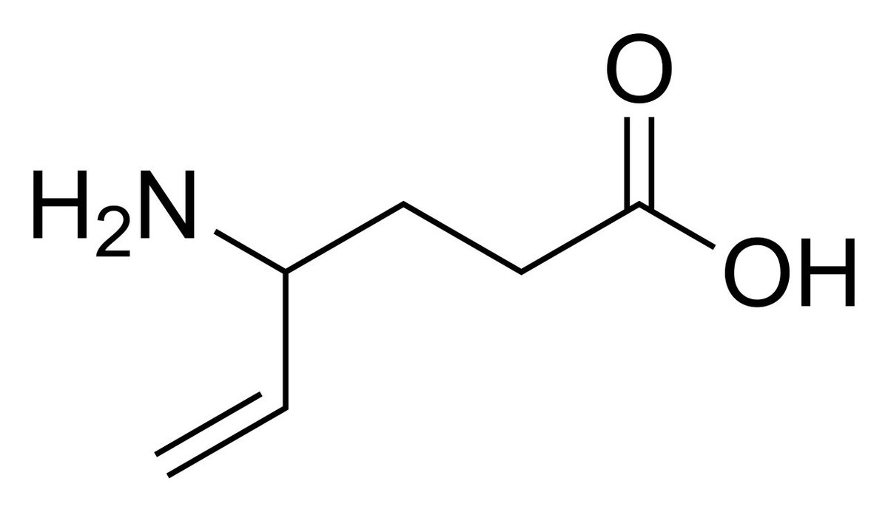
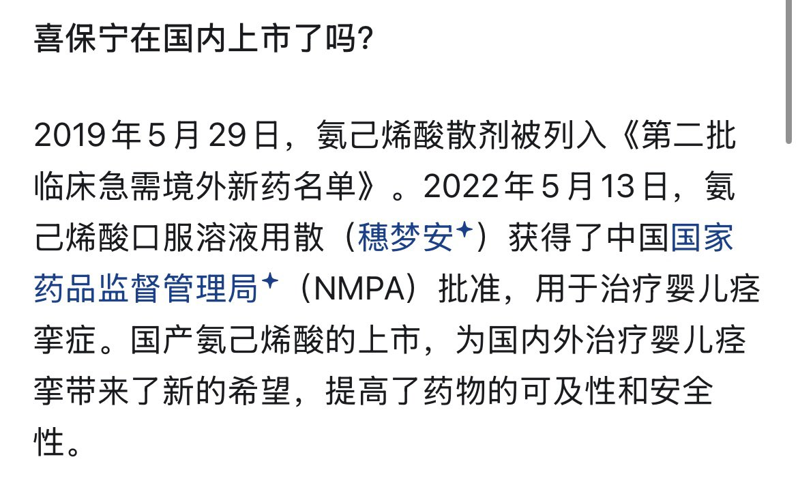

v10L3T
@_Axer1a
@YangDowond 我们gaba也有自己的maoi


dowond yang
@YangDowond
GABA衍生药物介绍第二弹-氨己烯酸（维加巴林 Vigabatrin）
它的化学名是γ-乙烯基-GABA，它是一个不可逆的自杀式抑制剂，进入大脑后，会主动和负责降解GABA的转氨酶（GABA-T）结合，然后把酶和自己一起锁死，同归于尽，这会导致大脑里的GABA浓度由于无法代谢而全线暴涨，它被用来压制最极端的婴儿痉挛症 https://t.co/50mU2aTZzM